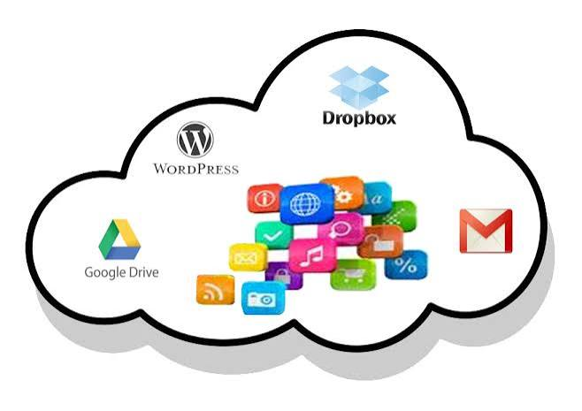

¿Qué es Cloud Computing?
Es la entrega bajo demanda de potencia de cómputo, bases de datos, almacenamiento de archivos y aplicaciones por medio de una plataforma de servicios en la nube con un modelo de pago por uso.
Permite a las organizaciones evitar o reducir los costos de capital iniciales en infraestructura de TI y enfocarse en proyectos de innovación.
Su flexibilidad facilita escalar recursos de manera automática de acuerdo a la demanda de los usuarios en tiempo real.
Servicios Principales
- IaaS (Infraestructura como Servicio): Servidores virtuales y almacenamiento.
- PaaS (Plataforma como Servicio): Entornos de desarrollo y despliegue.
- SaaS (Software como Servicio): Aplicaciones listas para usar (ej. Gmail, Office 365).
Comparación del Entorno Cloud
| Aspecto | Ventaja | Desventaja |
|---|---|---|
| Acceso | Disponible desde cualquier lugar con conexión | Dependencia constante de Internet |
| Costos | Reducción de inversión inicial en servidores | Costos recurrentes por suscripción |
| Seguridad | Copias de respaldo y respaldos automáticos | Riesgos derivados de acceso remoto externo |
